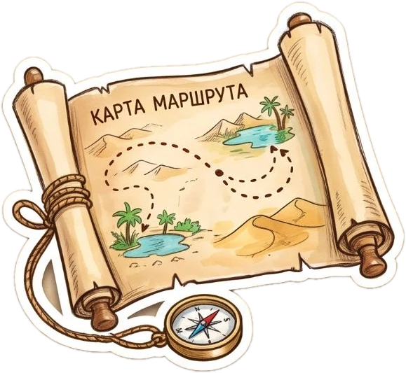
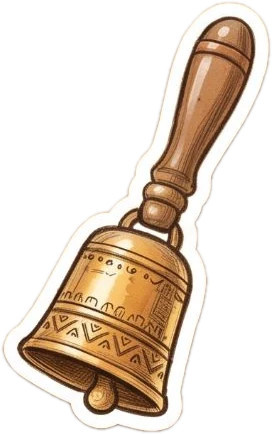
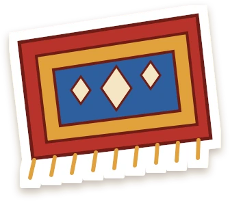
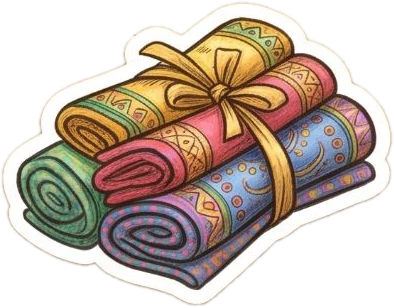
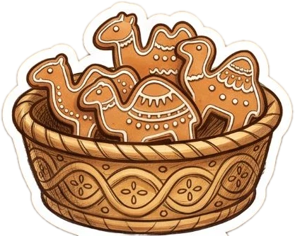
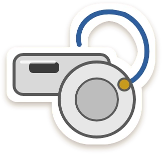
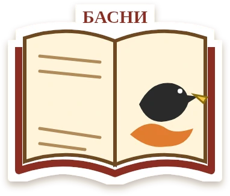
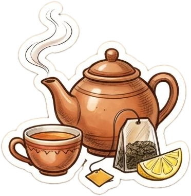

📍Основной маршрут «Троша потерялся»
🗺️ Посмотреть все точки на карте9 интересных остановок в исторической части Троицка








🐫О приложении
Верблюд — символ Троицка: через город шли караваны из Бухары и Ташкента
🐪 Кто такой Троша
Верблюжонок Троша засмотрелся на голубей, отстал от каравана и растерял по городу свои вещи. Ребёнок вместе с родителями идёт по Троицку и помогает их найти.
🔔 Что на каждой точке
Звенит караванный колокольчик, рассказчик коротко и понятно объясняет, что это за место, Троша находит свою вещь, а потом — вопрос с картинками и маленькая игра.
🏅 Награда
Найденные вещи попадают в альбом наклеек, из фото на точках сам собирается коллаж, а за весь маршрут ребёнок получает значок «Юный караванщик».
👨👩👧Для родителей
Прогулка, на которой интересно и детям, и взрослым
🛡️ Безопасно
- Без регистрации и рекламы
- Не собирает личные данные
- Напоминает «Держи взрослого за руку» и предупреждает о дорогах
📚 Для взрослых
- На каждой точке — подсказка, о чём поговорить с ребёнком
- Подробная историческая справка голосом
- Пауза, пропуск точки и завершение в любой момент
📶 Без интернета
- Озвучка и пешеходные линии уже внутри приложения
- Прибытие на точку определяется по GPS
- Фото хранятся только на вашем телефоне
✉️Контакты
Команда проекта «Маленький караван»